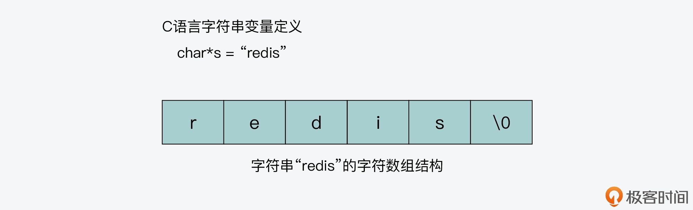
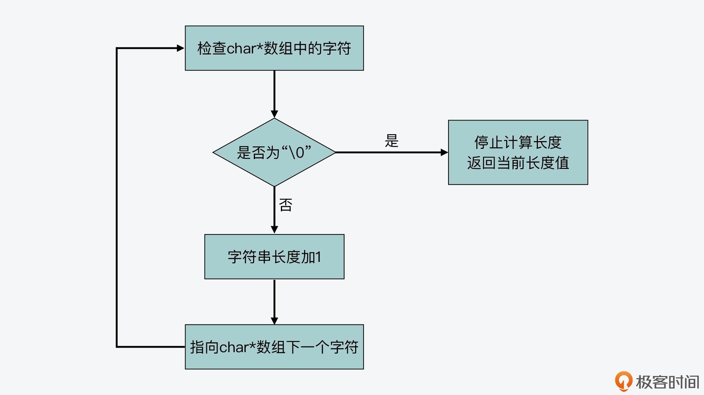
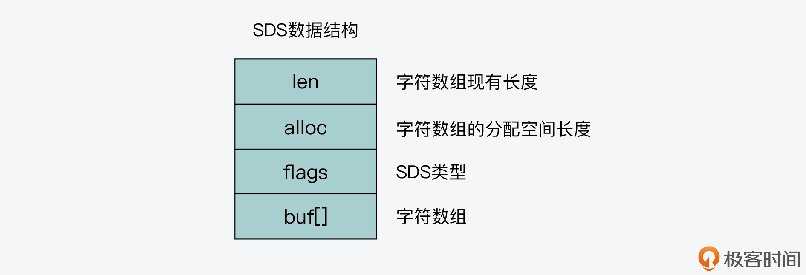
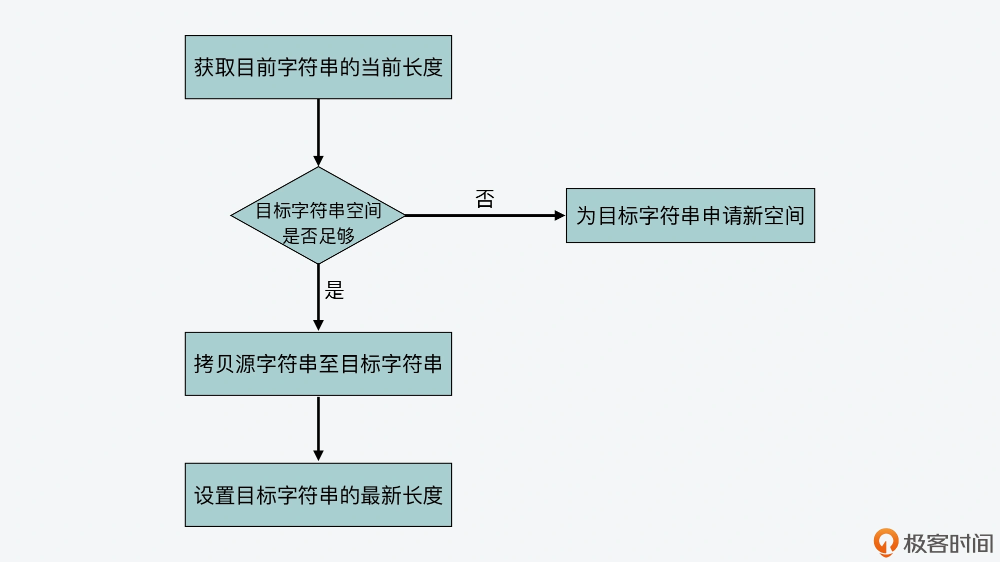

- 00 开篇词 阅读Redis源码能给你带来什么？.md.html
- 01 带你快速攻略Redis源码的整体架构.md.html
- 02 键值对中字符串的实现，用char还是结构体？.md.html
- 03 如何实现一个性能优异的Hash表？.md.html
- 04 内存友好的数据结构该如何细化设计？.md.html
- 05 有序集合为何能同时支持点查询和范围查询？.md.html
- 06 从ziplist到quicklist，再到listpack的启发.md.html
- 07 为什么Stream使用了Radix Tree？.md.html
- 08 Redis server启动后会做哪些操作？.md.html
- 09 Redis事件驱动框架（上）：何时使用select、poll、epoll？.md.html
- 10 Redis事件驱动框架（中）：Redis实现了Reactor模型吗？.md.html
- 11 Redis事件驱动框架（下）：Redis有哪些事件？.md.html
- 12 Redis真的是单线程吗？.md.html
- 13 Redis 6.0多IO线程的效率提高了吗？.md.html
- 14 从代码实现看分布式锁的原子性保证.md.html
- 15 为什么LRU算法原理和代码实现不一样？.md.html
- 16 LFU算法和其他算法相比有优势吗？.md.html
- 17 Lazy Free会影响缓存替换吗？.md.html
- 18 如何生成和解读RDB文件？.md.html
- 19 AOF重写（上）：触发时机与重写的影响.md.html
- 20 AOF重写（下）：重写时的新写操作记录在哪里？.md.html
- 21 主从复制：基于状态机的设计与实现.md.html
- 22 哨兵也和Redis实例一样初始化吗？.md.html
- 23 从哨兵Leader选举学习Raft协议实现（上）.md.html
- 24 从哨兵Leader选举学习Raft协议实现（下）.md.html
- 25 PubSub在主从故障切换时是如何发挥作用的？.md.html
- 26 从Ping-Pong消息学习Gossip协议的实现.md.html
- 27 从MOVED、ASK看集群节点如何处理命令？.md.html
- 28 Redis Cluster数据迁移会阻塞吗？.md.html
- 29 如何正确实现循环缓冲区？.md.html
- 30 如何在系统中实现延迟监控？.md.html
- 31 从Module的实现学习动态扩展功能.md.html
- 32 如何在一个系统中实现单元测试？.md.html
- 结束语 Redis源码阅读，让我们从新开始.md.html
- 捐赠
02 键值对中字符串的实现，用char还是结构体？
字符串在我们平时的应用开发中十分常见，比如我们要记录用户信息、商品信息、状态信息等等，这些都会用到字符串。
而对于 Redis 来说，键值对中的键是字符串，值有时也是字符串。我们在 Redis 中写入一条用户信息，记录了用户姓名、性别、所在城市等，这些都是字符串，如下所示：
SET user:id:100 {“name”: “zhangsan”, “gender”: “M”,“city”:"beijing"}
此外，Redis 实例和客户端交互的命令和数据，也都是用字符串表示的。
那么，既然字符串的使用如此广泛和关键，就使得我们在实现字符串时，需要尽量满足以下三个要求：
- 能支持丰富且高效的字符串操作，比如字符串追加、拷贝、比较、获取长度等；
- 能保存任意的二进制数据，比如图片等
- 能尽可能地节省内存开销。
其实，如果你开发过 C 语言程序，你应该就知道，在 C 语言中可以使用 * 字符数组char来实现字符串。同时，C 语言标准库 string.h 中也定义了多种字符串的操作函数，比如字符串比较函数 strcmp、字符串长度计算函数 strlen、字符串追加函数 strcat 等，这样就便于开发者直接调用这些函数来完成字符串操作。
所以这样看起来，Redis 好像完全可以复用 C 语言中对字符串的实现呀？
但实际上，我们在使用 C 语言字符串时，经常需要手动检查和分配字符串空间，而这就会增加代码开发的工作量。而且，图片等数据还无法用字符串保存，也就限制了应用范围。
那么，从系统设计的角度来看，我们该如何设计实现字符串呢？
其实，Redis 设计了简单动态字符串（Simple Dynamic String，SDS）的结构，用来表示字符串。相比于 C 语言中的字符串实现，SDS 这种字符串的实现方式，会提升字符串的操作效率，并且可以用来保存二进制数据。
所以今天这节课，我就来给你介绍下 SDS 结构的设计思想和实现技巧，这样你就既可以掌握 char* 实现方法的不足和 SDS 的优势，还能学习到紧凑型内存结构的实现技巧。如果你要在自己的系统软件中实现字符串类型，就可以参考 Redis 的设计思想，来更好地提升操作效率，节省内存开销。
好，接下来，我们先来了解下为什么 Redis 没有复用 C 语言的字符串实现方法。
为什么 Redis 不用 char*？
实际上，要想解答这个问题，我们需要先知道 char* 字符串数组的结构特点，还有 Redis 对字符串的需求是什么，所以下面我们就来具体分析一下。
char* 的结构设计
首先，我们来看看 char* 字符数组的结构。
char*字符数组的结构很简单，就是。比如，下图显示的就是字符串“redis”的char*一块连续的内存空间，依次存放了字符串中的每一个字符数组结构。

从图中可以看到，字符数组的最后一个字符是“\0”，这个字符的作用是什么呢？其实，C 语言在对字符串进行操作时，char* 指针只是指向字符数组的起始位置，而字符数组的结尾位置就用“\0”表示，意思是指字符串的结束。
这样一来，C 语言标准库中字符串的操作函数，就会通过检查字符数组中是否有“\0”，来判断字符串是否结束。比如，strlen 函数就是一种字符串操作函数，它可以返回一个字符串的长度。这个函数会遍历字符数组中的每一个字符，并进行计数，直到检查的字符为“\0”。此时，strlen 函数会停止计数，返回已经统计到的字符个数。下图显示了 strlen 函数的执行流程：

我们再通过一段代码，来看下“\0”结束字符对字符串长度的影响。这里我创建了两个字符串变量 a 和 b，分别给它们赋值为“red\0is”和“redis\0”。然后，我用 strlen 函数计算这两个字符串长度，如下所示：
#include <stdio.h>
#include <string.h>
int main()
{
char *a = "red\0is";
char *b = "redis\0";
printf("%lu\n", strlen(a));
printf("%lu\n", strlen(b));
return 0;
}
当程序执行完这段代码后，输出的结果分别是 3 和 5，表示 a 和 b 的长度分别是 3 个字符和 5 个字符。这是因为 a 中在“red”这 3 个字符后，就有了结束字符“\0”，而 b 中的结束字符是在“redis”5 个字符后。
也就是说，char* 字符串以“\0”表示字符串的结束，其实会给我们保存数据带来一定的负面影响。如果我们要保存的数据中，本身就有“\0”，那么数据在“\0”处就会被截断，而这就不符合 Redis 希望能保存任意二进制数据的需求了。
操作函数复杂度
而除了 char* 字符数组结构的设计问题以外，使用“\0”作为字符串的结束字符，虽然可以让字符串操作函数判断字符串的结束位置，但它也会带来另一方面的负面影响，也就是会导致操作函数的复杂度增加。
我还是以 strlen 函数为例，该函数需要遍历字符数组中的每一个字符，才能得到字符串长度，所以这个操作函数的复杂度是 O(N)。
我们再来看另一个常用的操作函数：字符串追加函数 strcat。strcat 函数是将一个源字符串 src 追加到一个目标字符串的末尾。该函数的代码如下所示：
char *strcat(char *dest, const char *src) {
//将目标字符串复制给tmp变量
char *tmp = dest;
//用一个while循环遍历目标字符串，直到遇到“\0”跳出循环，指向目标字符串的末尾
while(*dest)
dest++;
//将源字符串中的每个字符逐一赋值到目标字符串中，直到遇到结束字符
while((*dest++ = *src++) != '\0' )
return tmp;
}
从代码中可以看到，strcat 函数和 strlen 函数类似，复杂度都很高，也都需要先通过遍历字符串才能得到目标字符串的末尾。然后对于 strcat 函数来说，还要再遍历源字符串才能完成追加。另外，它在把源字符串追加到目标字符串末尾时，还需要确认目标字符串具有足够的可用空间，否则就无法追加。
所以，这就要求开发人员在调用 strcat 时，要保证目标字符串有足够的空间，不然就需要开发人员动态分配空间，从而增加了编程的复杂度。而操作函数的复杂度一旦增加，就会影响字符串的操作效率，这就不符合 Redis 对字符串高效操作的需求了。
好了，综合以上在 C 语言中使用 char* 实现字符串的两大不足之处以后，我们现在就需要找到新的实现字符串的方式了。所以接下来，我们就来学习下，Redis 是如何对字符串的实现进行设计考虑的。
SDS 的设计思想
因为 Redis 是使用 C 语言开发的，所以为了保证能尽量复用 C 标准库中的字符串操作函数，Redis 保留了使用字符数组来保存实际的数据。但是，和 C 语言仅用字符数组不同，Redis 还专门设计了 SDS（即简单动态字符串）的数据结构。下面我们一起来看看。
SDS 结构设计
首先，SDS 结构里包含了一个字符数组 buf[]，用来保存实际数据。同时，SDS 结构里还包含了三个元数据，分别是字符数组现有长度 len、分配给字符数组的空间长度 alloc，以及 SDS 类型 flags。其中，Redis 给 len 和 alloc 这两个元数据定义了多种数据类型，进而可以用来表示不同类型的 SDS，稍后我会给你具体介绍。下图显示了 SDS 的结构，你可以先看下。

另外，如果你在 Redis 源码中查找过 SDS 的定义，那你可能会看到，Redis 使用 typedef 给 char* 类型定义了一个别名，这个别名就是 sds，如下所示：
typedef char *sds;
其实，这是因为 SDS 本质还是字符数组，只是在字符数组基础上增加了额外的元数据。在 Redis 中需要用到字符数组时，就直接使用 sds 这个别名。
同时，在创建新的字符串时，Redis 会调用 SDS 创建函数 sdsnewlen。sdsnewlen 函数会新建 sds 类型变量（也就是 char* 类型变量），并新建 SDS 结构体，把 SDS 结构体中的数组 buf[] 赋给 sds 类型变量。最后，sdsnewlen 函数会把要创建的字符串拷贝给 sds 变量。下面的代码就显示了 sdsnewlen 函数的这个操作逻辑，你可以看下。
sds sdsnewlen(const void *init, size_t initlen) {
void *sh; //指向SDS结构体的指针
sds s; //sds类型变量，即char*字符数组
...
sh = s_malloc(hdrlen+initlen+1); //新建SDS结构，并分配内存空间
...
s = (char*)sh+hdrlen; //sds类型变量指向SDS结构体中的buf数组，sh指向SDS结构体起始位置，hdrlen是SDS结构体中元数据的长度
...
if (initlen && init)
memcpy(s, init, initlen); //将要传入的字符串拷贝给sds变量s
s[initlen] = '\0'; //变量s末尾增加\0，表示字符串结束
return s;
好了，了解了 SDS 结构的定义后，我们再来看看，相比传统 C 语言字符串，SDS 操作效率的改进之处。
SDS 操作效率
因为 SDS 结构中记录了字符数组已占用的空间和被分配的空间，这就比传统 C 语言实现的字符串能带来更高的操作效率。
我还是以字符串追加操作为例。Redis 中实现字符串追加的函数是 sds.c 文件中的 sdscatlen 函数。这个函数的参数一共有三个，分别是目标字符串 s、源字符串 t 和要追加的长度 len，源码如下所示：
sds sdscatlen(sds s, const void *t, size_t len) {
//获取目标字符串s的当前长度
size_t curlen = sdslen(s);
//根据要追加的长度len和目标字符串s的现有长度，判断是否要增加新的空间
s = sdsMakeRoomFor(s,len);
if (s == NULL) return NULL;
//将源字符串t中len长度的数据拷贝到目标字符串结尾
memcpy(s+curlen, t, len);
//设置目标字符串的最新长度：拷贝前长度curlen加上拷贝长度
sdssetlen(s, curlen+len);
//拷贝后，在目标字符串结尾加上\0
s[curlen+len] = '\0';
return s;
}
通过分析这个函数的源码，我们可以看到 sdscatlen 的实现较为简单，其执行过程分为三步：
- 首先，获取目标字符串的当前长度，并调用 sdsMakeRoomFor 函数，根据当前长度和要追加的长度，判断是否要给目标字符串新增空间。这一步主要是保证，目标字符串有足够的空间接收追加的字符串。
- 其次，在保证了目标字符串的空间足够后，将源字符串中指定长度 len 的数据追加到目标字符串。
- 最后，设置目标字符串的最新长度。
我画了一张图，显示了 sdscatlen 的执行过程，你可以看下。

所以，到这里你就能发现，和 C 语言中的字符串操作相比，SDS 通过记录字符数组的使用长度和分配空间大小，避免了对字符串的遍历操作，降低了操作开销，进一步就可以帮助诸多字符串操作更加高效地完成，比如创建、追加、复制、比较等，这一设计思想非常值得我们学习。
此外，SDS 把目标字符串的空间检查和扩容封装在了 sdsMakeRoomFor 函数中，并且在涉及字符串空间变化的操作中，如追加、复制等，会直接调用该函数。
这一设计实现，就避免了开发人员因忘记给目标字符串扩容，而导致操作失败的情况。比如，我们使用函数 strcpy (char *dest, const char *src) 时，如果 src 的长度大于 dest 的长度，代码中我们也没有做检查的话，就会造成内存溢出。所以这种封装操作的设计思想，同样值得我们学习。
那么，除了使用元数据记录字符串数组长度和封装操作的设计思想，SDS 还有什么优秀的设计与实现值得我们学习呢？这就和我刚才给你介绍的 Redis 对内存节省的需求相关了。
所以接下来，我们就来看看 SDS 在编程技巧上是如何实现节省内存的。
紧凑型字符串结构的编程技巧
前面我提到，SDS 结构中有一个元数据 flags，表示的是 SDS 类型。事实上，SDS 一共设计了 5 种类型，分别是 sdshdr5、sdshdr8、sdshdr16、sdshdr32 和 sdshdr64。这 5 种类型的主要区别就在于，它们数据结构中的字符数组现有长度 len 和分配空间长度 alloc，这两个元数据的数据类型不同。
因为 sdshdr5 这一类型 Redis 已经不再使用了，所以我们这里主要来了解下剩余的 4 种类型。以 sdshdr8 为例，它的定义如下所示：
struct __attribute__ ((__packed__)) sdshdr8 {
uint8_t len; /* 字符数组现有长度*/
uint8_t alloc; /* 字符数组的已分配空间，不包括结构体和\0结束字符*/
unsigned char flags; /* SDS类型*/
char buf[]; /*字符数组*/
};
我们可以看到，现有长度 len 和已分配空间 alloc 的数据类型都是 uint8_t。uint8_t 是 8 位无符号整型，会占用 1 字节的内存空间。当字符串类型是 sdshdr8 时，它能表示的字符数组长度（包括数组最后一位\0）不会超过 256 字节（2 的 8 次方等于 256）。
而对于 sdshdr16、sdshdr32、sdshdr64 三种类型来说，它们的 len 和 alloc 数据类型分别是 uint16_t、uint32_t、uint64_t，即它们能表示的字符数组长度，分别不超过 2 的 16 次方、32 次方和 64 次方。这两个元数据各自占用的内存空间在 sdshdr16、sdshdr32、sdshdr64 类型中，则分别是 2 字节、4 字节和 8 字节。
实际上，SDS 之所以设计不同的结构头（即不同类型），是为了能灵活保存不同大小的字符串，从而有效节省内存空间。因为在保存不同大小的字符串时，结构头占用的内存空间也不一样，这样一来，在保存小字符串时，结构头占用空间也比较少。
否则，假设 SDS 都设计一样大小的结构头，比如都使用 uint64_t 类型表示 len 和 alloc，那么假设要保存的字符串是 10 个字节，而此时结构头中 len 和 alloc 本身就占用了 16 个字节了，比保存的数据都多了。所以这样的设计对内存并不友好，也不满足 Redis 节省内存的需求。
好了，除了设计不同类型的结构头，Redis 在编程上还使用了专门的编译优化来节省内存空间。在刚才介绍的 sdshdr8 结构定义中，我们可以看到，在 struct 和 sdshdr8 之间使用了attribute ((packed))，如下所示：
struct __attribute__ ((__packed__)) sdshdr8
其实这里，attribute ((packed))的作用就是告诉编译器，在编译 sdshdr8 结构时，不要使用字节对齐的方式，而是采用紧凑的方式分配内存。这是因为在默认情况下，编译器会按照 8 字节对齐的方式，给变量分配内存。也就是说，即使一个变量的大小不到 8 个字节，编译器也会给它分配 8 个字节。
为了方便你理解，我给你举个例子。假设我定义了一个结构体 s1，它有两个成员变量，类型分别是 char 和 int，如下所示：
#include <stdio.h>
int main() {
struct s1 {
char a;
int b;
} ts1;
printf("%lu\n", sizeof(ts1));
return 0;
}
虽然 char 类型占用 1 个字节，int 类型占用 4 个字节，但是如果你运行这段代码，就会发现打印出来的结果是 8。这就是因为在默认情况下，编译器会给 s1 结构体分配 8 个字节的空间，而这样其中就有 3 个字节被浪费掉了。
为了节省内存，Redis 在这方面的设计上可以说是精打细算的。所以，Redis 采用了attribute ((packed))属性定义结构体，这样一来，结构体实际占用多少内存空间，编译器就分配多少空间。
比如，我用attribute ((packed))属性定义结构体 s2，同样包含 char 和 int 两个类型的成员变量，代码如下所示：
#include <stdio.h>
int main() {
struct __attribute__((packed)) s2{
char a;
int b;
} ts2;
printf("%lu\n", sizeof(ts2));
return 0;
}
当你运行这段代码时，你可以看到，打印的结果是 5，表示编译器用了紧凑型内存分配，s2 结构体只占用 5 个字节的空间。
好了，总而言之，如果你在开发程序时，希望能节省数据结构的内存开销，就可以把attribute ((packed))这个编程方法用起来。
小结
这节课我主要给你介绍了 Redis 中字符串的设计与实现。你要知道，字符串的实现需要考虑操作高效、能保存任意二进制数据，以及节省内存的需求。而 Redis 中设计实现字符串的方式，就非常值得你学习和借鉴。
因此这节课，你需要重点关注三个要点，分别是：
- C 语言中使用 char* 实现字符串的不足，主要是因为使用“\0”表示字符串结束，操作时需遍历字符串，效率不高，并且无法完整表示包含“\0”的数据，因而这就无法满足 Redis 的需求。
- Redis 中字符串的设计思想与实现方法。Redis 专门设计了 SDS 数据结构，在字符数组的基础上，增加了字符数组长度和分配空间大小等元数据。这样一来，需要基于字符串长度进行的追加、复制、比较等操作，就可以直接读取元数据，效率也就提升了。而且，SDS 不通过字符串中的“\0”字符判断字符串结束，而是直接将其作为二进制数据处理，可以用来保存图片等二进制数据。
- SDS 中是通过设计不同 SDS 类型来表示不同大小的字符串，并使用attribute ((packed))这个编程小技巧，来实现紧凑型内存布局，达到节省内存的目的。
字符串看起来简单，但通过今天这节课的学习，你可以看到实现字符串有很多需要精巧设计的地方。C 语言字符串的实现方法和 SDS 的联系与区别，也是 Redis 面试时经常会被问到的问题，所以我也希望你能通过今天这节课，掌握好它俩的区别。
每课一问
SDS 字符串在 Redis 内部模块实现中也被广泛使用，你能在 Redis server 和客户端的实现中，找到使用 SDS 字符串的地方么？
欢迎在留言区分享你的思考和操作过程，我们一起交流讨论。如果觉得有收获，也欢迎你把今天的内容分享给更多的朋友。
© 2019 - 2023 Liangliang Lee. Powered by gin and hexo-theme-book.